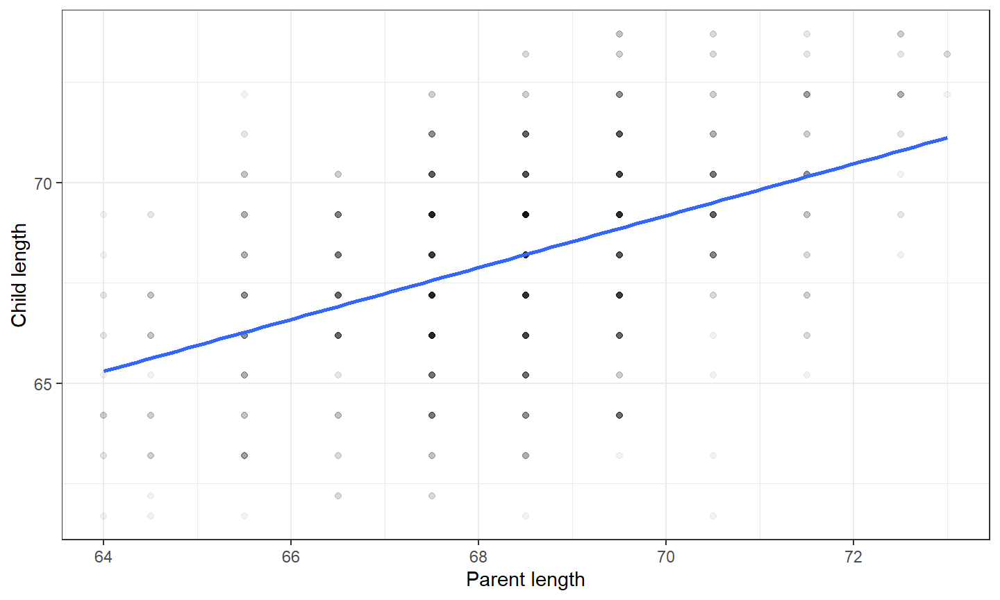
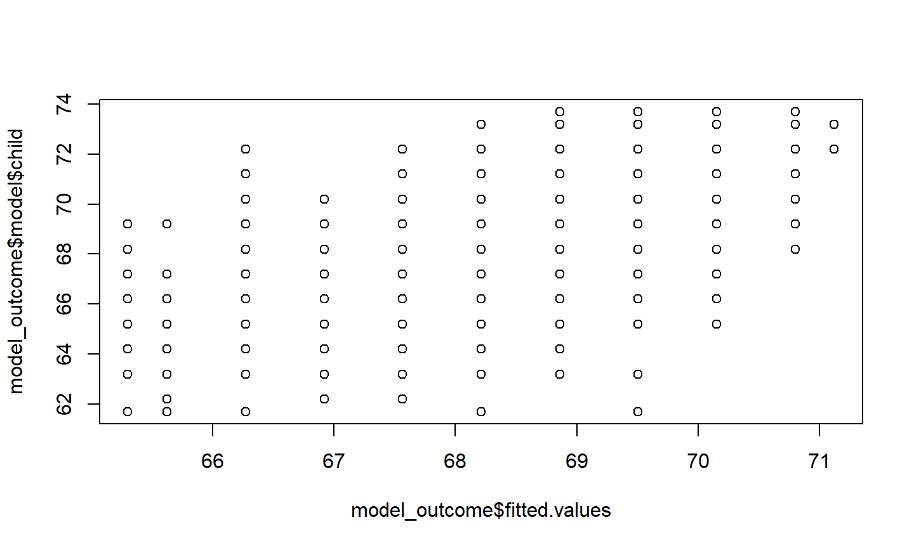
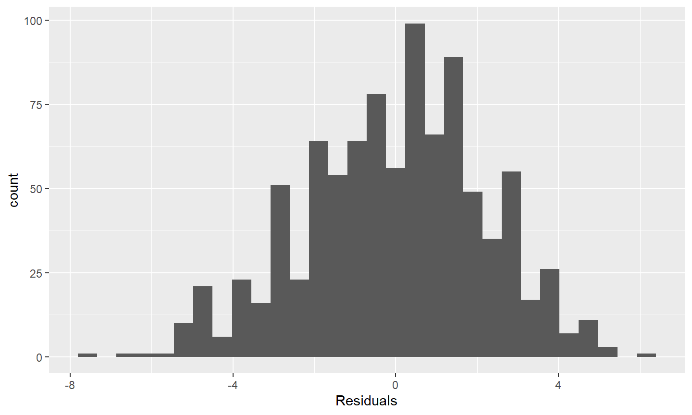
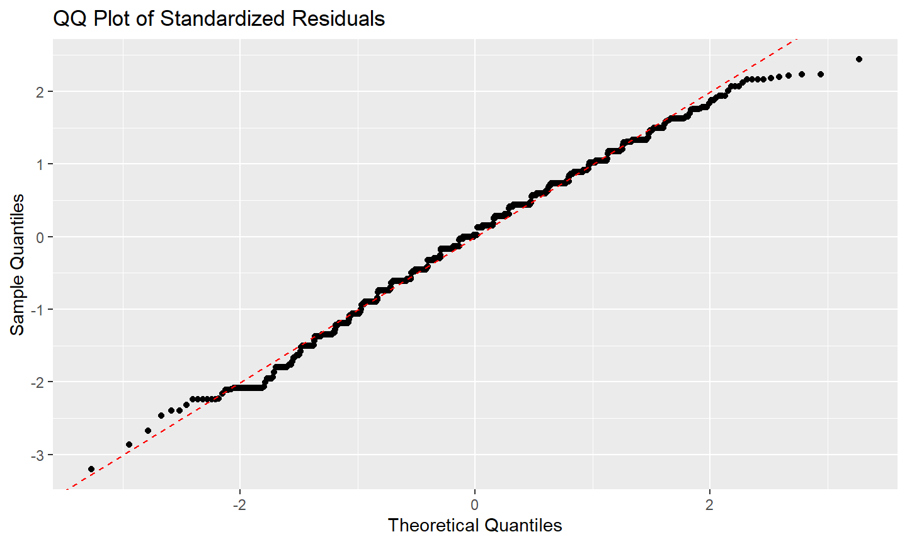
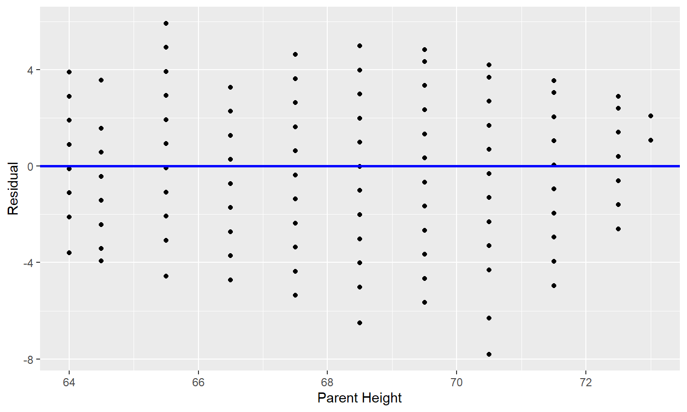
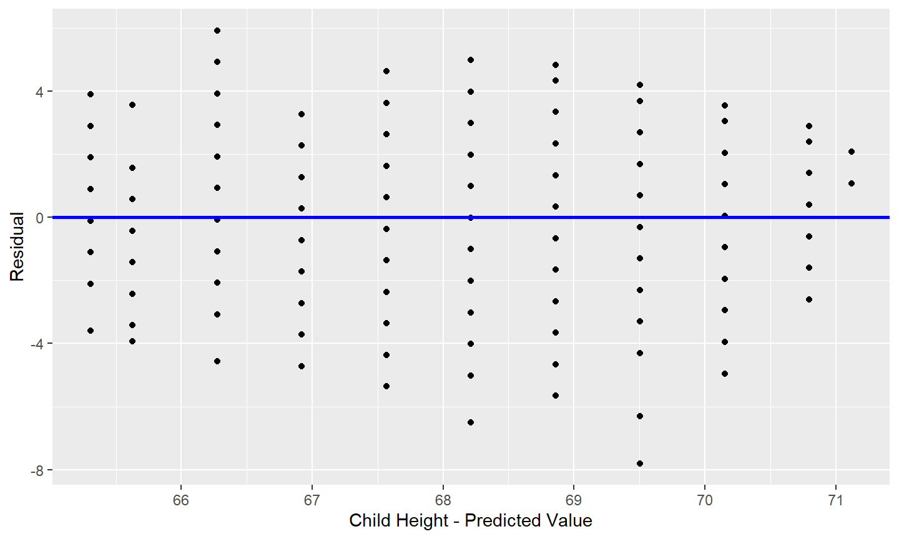
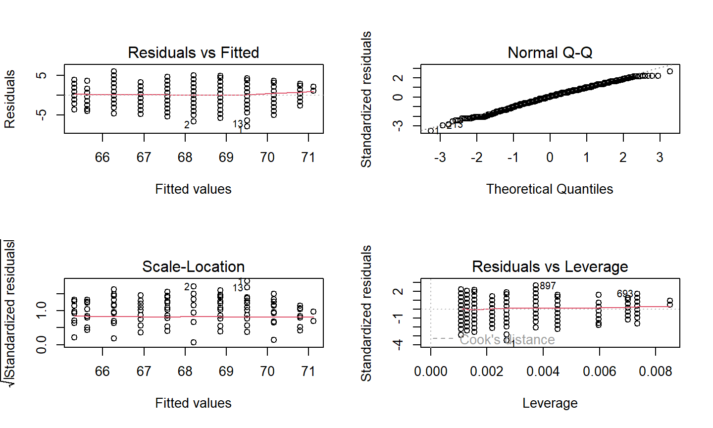

17-10-2023
Recap of Last Week
Recap Lecture 5
- Recap: How to tell a story with data
- 5 steps of data analysis
- More Advanced Figures
- Tips
- Examples
Outline of Lecture 6
Outline of Lecture 6
- Introduction into Data Modelling
- Simple Linear Regression
- Assumptions of Linear Regressions
- Correlation versus Causation
Steps of Data Analysis

Introduction into Data Modelling
What is data modelling?
- Estimating the relationship between:
- Outcome variable
y, the dependent variable - Explanatory variable
x, the independent variable / covariate
- Outcome variable
- Main purposes of data modelling
- Modelling for explanation (significance, causality)
- Modelling for prediction
- Focus in this class is on modelling for explanation
- Refer to
xas explanatory variables
- Refer to
Simple Linear Regression
What is a Simple Linear Regression?
- Investigating the linear relation between two variables
- Linear: assumes a linear relation between x and y, if x increases by 1, y increases by the slope (\(\beta\))
- Simple: only one independent variable
\[ Y = \alpha + \beta X + \epsilon \]
Assumptions of Linear Regressions (LINEE)
- Linearity of relationship between variables
- A linear relationship between X and Y
- Independence of residuals
- There should be no correlation between residuals
- Normality of residuals
- The residuals should be normally distributed
- Equality of variance of residuals (homoskedasticity)
- Variance of the residuals is the same for each value of X
- Exogeneity (zero conditional mean)
- The residuals should be independent of X (independent variables)
Assumptions of Linear Regressions - Multiple Regression
For multiple independent variables:
Extra Assumption: No perfect multicollinearity
- There should not be perfect correlation between different X variables
SLR in R
Galton Dataset
library(HistData)
## Warning: package 'HistData' was built under R version 4.2.3
# Load the dataset data(Galton) # Explore the dataset head(Galton)
## parent child ## 1 70.5 61.7 ## 2 68.5 61.7 ## 3 65.5 61.7 ## 4 64.5 61.7 ## 5 64.0 61.7 ## 6 67.5 62.2
Exploratory Data Analysis
# Summary of the data summary(Galton)
## parent child ## Min. :64.00 Min. :61.70 ## 1st Qu.:67.50 1st Qu.:66.20 ## Median :68.50 Median :68.20 ## Mean :68.31 Mean :68.09 ## 3rd Qu.:69.50 3rd Qu.:70.20 ## Max. :73.00 Max. :73.70
# Correlation cor(Galton$child, Galton$parent)
## [1] 0.4587624
Visualize (scatterplot)
# Plot the data
scatterplot <- ggplot(Galton,
aes(x = parent, y = child)) +
geom_point(alpha = 0.05) +
geom_smooth(method = "lm", se = FALSE) +
theme_bw() +
labs(x = "Parent length", y = "Child length")
Visualize (scatterplot)
# Plot the data scatterplot

Simple Linear Regression
\[ ChildLength = \alpha + \beta ParentLength + \epsilon \]
# Fit a simple linear regression model model_outcome <- lm(child ~ parent, data = Galton) # View the summary of the regression model summary(model_outcome)
## ## Call: ## lm(formula = child ~ parent, data = Galton) ## ## Residuals: ## Min 1Q Median 3Q Max ## -7.8050 -1.3661 0.0487 1.6339 5.9264 ## ## Coefficients: ## Estimate Std. Error t value Pr(>|t|) ## (Intercept) 23.94153 2.81088 8.517 <2e-16 *** ## parent 0.64629 0.04114 15.711 <2e-16 *** ## --- ## Signif. codes: 0 '***' 0.001 '**' 0.01 '*' 0.05 '.' 0.1 ' ' 1 ## ## Residual standard error: 2.239 on 926 degrees of freedom ## Multiple R-squared: 0.2105, Adjusted R-squared: 0.2096 ## F-statistic: 246.8 on 1 and 926 DF, p-value: < 2.2e-16
Moderndrive Package
# Install package and load library # install.packages(moderndive) library(moderndive) # Get regression table get_regression_table(model_outcome)
## # A tibble: 2 × 7 ## term estimate std_error statistic p_value lower_ci upper_ci ## <chr> <dbl> <dbl> <dbl> <dbl> <dbl> <dbl> ## 1 intercept 23.9 2.81 8.52 0 18.4 29.5 ## 2 parent 0.646 0.041 15.7 0 0.566 0.727
Testing the LINE Assumptions
Assumptions of Linear Regressions (LINEE)
- Linearity of relationship between variables
- A linear relationship between X and Y
- Independence of residuals
- There should be no correlation between residuals
- Normality of residuals
- The residuals should be normally distributed
- Equality of variance of residuals (homoskedasticity)
- Variance of the residuals is the same for each value of X
- Exogeneity (zero conditional mean)
- The residuals should be independent of X (independent variables)
Assumptions of Linear Regressions - Multiple Regression
For multiple independent variables:
Extra Assumption: No perfect multicollinearity
- There should not be perfect correlation between different X variables
L: Linearity between X and Y
# Scatterplot of X and Y
scatterplot_x_y <- ggplot(Galton,
aes(x = parent, y = child)) +
geom_point(alpha = 0.05) +
geom_smooth(method = "lm", se = FALSE) +
theme_bw() +
labs(x = "Parent length", y = "Child length")
L: Linearity between X and Y
Scatterplot of X and Y
# Plot the data scatterplot_x_y
L: Linearity between X and Y
# Plot the data observed values versus predicted values (ideally a horizontal line) plot(model_outcome$fitted.values, model_outcome$model$child)

L: Linearity between X and Y - Violated
If it is violated:
- Apply a nonlinear transformation to make the relation linear
- Taking the log for example
- Add another independent variable, such as \(X^2\)
I: Independence of Residuals
- Mainly a problem in time series data:
- No correlation between consecutive errors in time series data
- Check with a residuals time series plot
- Durbin-Watson test
- Ljung-Box test
- You can assume this holds for non time series data usually
I: Independence of Residuals
In time series data you would plot residuals against time.
Tests for autocorrelation (dependence between residuals): be careful with non-timeseries data!!
# Load the lmtest package library(lmtest) # Perform the Durbin Watson test - p < 0.05 suggests autocorrelation dwtest(model_outcome)
## ## Durbin-Watson test ## ## data: model_outcome ## DW = 0.045702, p-value < 2.2e-16 ## alternative hypothesis: true autocorrelation is greater than 0
I: Independence of Residuals
In time series data you would plot residuals against time.
Tests for autocorrelation (dependence between residuals): be careful with non-timeseries data!!
# Perform the Ljung-Box test on the residuals - p < 0.05 suggests serial correlation Box.test(model_outcome$residuals, type = "Ljung-Box")
## ## Box-Ljung test ## ## data: model_outcome$residuals ## X-squared = 872.48, df = 1, p-value < 2.2e-16
I: Independence of Residuals - Violated
If it is violated:
- Add lags of the dependent variable
- Add lags of independent variables
N: Normality of Residuals
Draw a histogram of residuals:
# Save residuals in a dataframe
residuals_df <- data.frame(Residuals = model_outcome$residuals)
# Plot a histogram of the residuals
hist_residuals <- ggplot(residuals_df,
aes(x = Residuals)) +
geom_histogram() +
theme_grey()
N: Normality of Residuals
# Plot a histogram of the residuals hist_residuals

N: Normality of Residuals
QQ-Plot of standardized residuals:
# Standardize the residuals
residuals_vect <- model_outcome$residuals
std_residuals <- residuals_vect / sd(residuals_vect)
# Create QQ-plot data
qq_data_std <- data.frame(Theoretical_Quantiles =
qnorm(ppoints(length(std_residuals))),
Sample_Quantiles =
quantile(std_residuals,
probs = ppoints(length(std_residuals))))
# Plot a QQ-plot of the residuals
qq_plot <- ggplot(qq_data_std,
aes(x = Theoretical_Quantiles, y = Sample_Quantiles)) +
geom_point() +
geom_abline(intercept = 0, slope = 1, color = "red", linetype = "dashed") +
labs(title = "QQ Plot of Standardized Residuals",
x = "Theoretical Quantiles", y = "Sample Quantiles")
N: Normality of Residuals
# Plot a histogram of the residuals qq_plot

N: Normality of Residuals
Shapiro-Wilk test: if p < 0.05, reject assumption of normality
shapiro.test(model_outcome$residuals)
## ## Shapiro-Wilk normality test ## ## data: model_outcome$residuals ## W = 0.99275, p-value = 0.0001697
N: Normality of Residuals - Violated
If it is violated:
- Transorm the data
- Check for outliers
- Use bootstrapping for statistical inference
- Next lecture!
E: Equality of Variance of Residuals (Homoskedasticity)
Plot residuals against X (conditional heteroskedasticity)
# Get regression points
regression_points <- get_regression_points(model_outcome)
# Plot residuals against X
residuals_x <- ggplot(regression_points,
aes(x = parent, y = residual)) +
geom_point() +
labs(x = "Parent Height", y = "Residual") +
geom_hline(yintercept = 0, col = "blue", size = 1)
E: Equality of Variance of Residuals
# Plot residuals against X residuals_x

E: Equality of Variance of Residuals (Homoskedasticity)
Plot residuals against predicted values (global heteroskedasticity)
# Get regression points
regression_points <- get_regression_points(model_outcome)
# Plot residuals against predicted Y
residuals_predicted_y <- ggplot(regression_points,
aes(x = child_hat, y = residual)) +
geom_point() +
labs(x = "Child Height - Predicted Value", y = "Residual") +
geom_hline(yintercept = 0, col = "blue", size = 1)
E: Equality of Variance of Residuals
# Plot residuals against predicted Y residuals_predicted_y

E: Equality of Variance of Residuals (Homoskedasticity)
Breusch-Pagan Test for heteroskedasticity (p < 0.05 indicates heteroskedasticity)
# Breusch-Pagan Test bptest(model_outcome)
## ## studentized Breusch-Pagan test ## ## data: model_outcome ## BP = 0.34256, df = 1, p-value = 0.5584
E: Equality of Variance of Residuals (Homoskedasticity) - Violated
If it is violated:
- Transform the dependent variable (e.g. take log)
- Redefine the dependent variable (use a rate instead of value)
- Use heteroskedasticity-robust standard errors
E: Equality of Variance of Residuals (Homoskedasticity) - Violated
Heteroskedastic-robust standard errors in R
library(sandwich) library(lmtest) # Fit the linear regression model with heteroskedasticity-robust standard errors model <- lm(child ~ parent, data = Galton) robust_model <- coeftest(model, vcov = vcovHC(model, type = "HC3")) # View the results robust_model
## ## t test of coefficients: ## ## Estimate Std. Error t value Pr(>|t|) ## (Intercept) 23.941530 2.744432 8.7237 < 2.2e-16 *** ## parent 0.646291 0.040191 16.0806 < 2.2e-16 *** ## --- ## Signif. codes: 0 '***' 0.001 '**' 0.01 '*' 0.05 '.' 0.1 ' ' 1
E: Equality of Variance of Residuals (Homoskedasticity) - Violated
Heteroskedastic-robust standard errors in R
# Load the stargazer package (if not already loaded) library(stargazer) # Fit the linear regression model with robust standard errors model <- lm(child ~ parent, data = Galton) robust_model <- coeftest(model, vcov = vcovHC(model, type = "HC0"))
E: Equality of Variance of Residuals
# Print the regression table including both models
stargazer(model, robust_model, type = "text",
title = "Regression Models Comparison",
dep.var.caption = "Child Height",
star.cutoffs = c(0.05, 0.01, 0.001))
## ## Regression Models Comparison ## ======================================================== ## Child Height ## ------------------------------------ ## child ## OLS coefficient ## test ## (1) (2) ## -------------------------------------------------------- ## parent 0.646*** 0.646*** ## (0.041) (0.040) ## ## Constant 23.942*** 23.942*** ## (2.811) (2.733) ## ## -------------------------------------------------------- ## Observations 928 ## R2 0.210 ## Adjusted R2 0.210 ## Residual Std. Error 2.239 (df = 926) ## F Statistic 246.839*** (df = 1; 926) ## ======================================================== ## Note: *p<0.05; **p<0.01; ***p<0.001
Exogeneity
The residuals should be independent of X (independent variables)
Also assume zero conditional mean: mean of residuals is (approximately) zero
Plot residuals against independent variables
Think about how data is collected! = theoretical justification
Omitted variable bias
Measurement errors
Reverse causality
Exogeneity - Violated
- Add additional explanatory variables
- Use instrumental variables
- Correlated with the endogenous independent variable
- But not with the error term
- Hausman test
- Compares a model with possible endogenous variable to one without
- F-test of joint significance of independent variabels in explaining the error term
Multicollinearity
- Important for multiple regression
- Calculate the correlation matrix
- Values close to -1 or 1 indicate high correlation
- Variance Inflation Factor (VIF): measure of correlation
- VIF_i = 1 / (1 - R²_i)
- R²_i = coefficient of determination for the regression of the variable against all the other independent variables
- VIF greater than 5 = significant multicollinearity
- Solution could be to remove an explanatory variable
Built in R checks for assumptions
R checks for model assumptions
# Change the panel layout to 2 x 2 (to look at all 4 plots at once) par(mfrow = c(2, 2)) # Use plot() function to create diagnostic plots plot(model_outcome)

R Plots Explained
- Residuals vs Fitted: checks for linearity
- Linearity if residuals are spread equally around zero
- Normal Q-Q: checks for normality of residuals
- If residuals follow the 45-degree line, assumption is met
- Scale-Location: checks for homoskedasticity
- If residuals are spread randomly and the red line is horizontal, assumption is met
- Residuals vs Leverage: checks for outliers
Correlation versus Causation
Correlation versus Causation
What is the difference between correlation and causation?
What have we analysed this lecture? Correlation or causation?